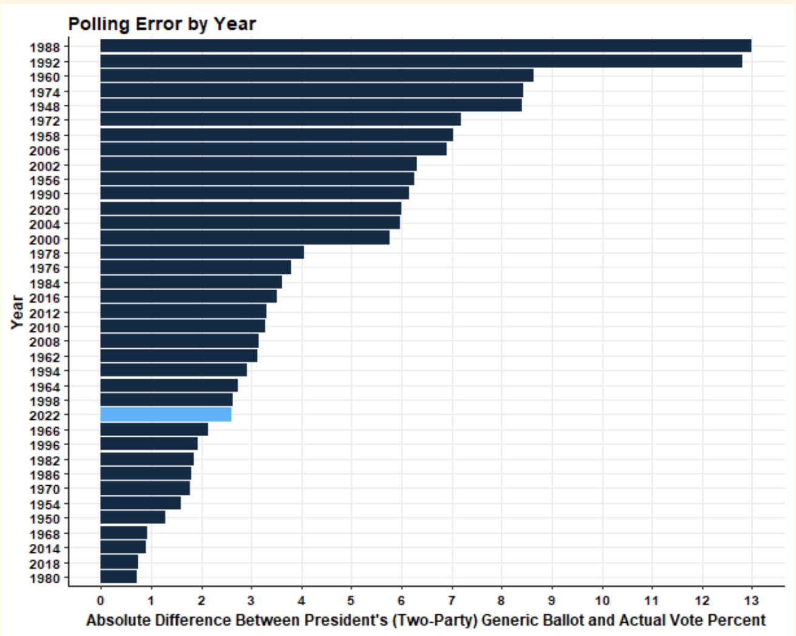

After a long semester of model making and an even longer campaign season, the midterm elections are finally in the rearview. To the surprise of many, no red wave came despite an increasingly dire media narrative and tightening polls in the days leading up to the midterm elections. While final vote tallies are still being counted we have a good enough idea of where the final tally stands. As of November 22nd, Democrats have held the Senate and await a Runoff election in Georgia to determine if they will expand their slim majority.
In the house, which is our focus area, Democrats have lost their slim majority with a final predicted split of 213 seats for Democrats and 222 seats for Republicans. These minimal losses are very strong showing for the Democrats but how do they compare to my final model?
#Describing the Model
As a refresher the final model I used in my prediction was:
Y = 33.910 -0.554* X1 + 0.604* X2 -2.874* X3
whereas,
Y = Democratic party popular vote share of two major parties (%)
X1 = The percent change in real disposable income between quarters 7 and 8 of a given election year
X2 = Support for Democrats based on an average of generic ballot polling (%)
X3 = The average expert rating for a given district in a given year (1-7)
Data for average expert rating included predictions from Cook Political, Real Clear Politics, Rothenerg, cq politics, and Sabato’s Crystal Ball. Generic ballot polling was based on generic ballot averages from September to election day of a given year. To predict, I plugged in the current data on RDI change over the last quarter, current Democratic generic ballot averages from Real Clear Politics, and average expert rating across all districts. This value was calculated using the expert predictions 2022 scrape provided to the course. This aggregates district ratings for all districts from predictions by Cook, Rothenberg, Sabato’s Crystal Ball and Real Clear Politics.
Based on the final model, I predicted that Democrats would win 49.5% of the two party vote share and Republicans will win 50.5% of the two party vote share. Due to limited data availability the prediction interval was very large with the prediction falling between 44-55 points for Democrats. Using a bivariate model to convert popular vote share to seat share, I also predicted that Democrats would win 209 House seats and Republicans would win 226. This prediction had a large uncertainty interval with a low of 179 seats and a high of 237 seats.
I also included a simple model for NH-01 which is the district I’ve been following this semester. The rough model includes average expert rating and incumbency. While the predictive power of this model was quite low, I nevertheless predicted with a great deal of uncertainty that Chris Pappas would narrowly take NH-01, over challenger Karoline Leavitt winning a two party vote share of 50.24%.
#Assesing My Predictions
My final prediction for Democratic Seat Share was 209 seats for Democrats. The actual outcome was 213 seats for Democrats. This means that my model underestimated the strength of Democrats in the 2022 midterm elections by 4 seats. This prediction is within the model’s uncertainty interval (180 - 237 seats). However, as explained extensively in my blog post the day before the election, data limitations, particularly dealing with expert predictions, made it difficult/impossible to reduce the uncertainty interval without ditching expert predictions as a predictive variable.

Interestingly, I predicted that Democrats would win 49.5% of the two party vote share. This model overestimated the performance of Democrats in the popular vote during the 2022 midterm elections. The actual Democratic two party vote share was 48.3% so the error of the model was -1.18 percentage points. This is also within the margin of error. However, this is once again to be expected given the large confidence interval (44 - 55) as a result of limited data availability.
The table below summarizes my predictions and accuracy.
| National 2 Party Vote Share Prediction | 49.5 |
|---|---|
| National seat share Prediction | 209.00 |
| Vote Share Error | -1.18 |
| Seat Share Error | 4.00 |
| NH-01 Vote Share Error | 3.67 |
Given that I only created a national model, I unfortunately cannot analyze my prediction accuracy on a state by state or region basis. However, I have done my best in the next section to put my model’s accuracy into historical context at the national level.
#Sources of Inaccuracy

##
|
| | 0%
|
| | 1%
|
|= | 1%
|
|= | 2%
|
|== | 2%
|
|=== | 4%
|
|=== | 5%
|
|===== | 7%
|
|===== | 8%
|
|====== | 8%
|
|======== | 12%
|
|========= | 12%
|
|========= | 13%
|
|========== | 14%
|
|========== | 15%
|
|=========== | 15%
|
|=========== | 16%
|
|============= | 18%
|
|============= | 19%
|
|============== | 19%
|
|============== | 20%
|
|============== | 21%
|
|================= | 25%
|
|================== | 26%
|
|=================== | 27%
|
|=================== | 28%
|
|===================== | 30%
|
|====================== | 32%
|
|======================= | 33%
|
|======================== | 35%
|
|========================= | 35%
|
|========================= | 36%
|
|========================== | 37%
|
|============================ | 41%
|
|=============================== | 45%
|
|================================== | 49%
|
|===================================== | 53%
|
|======================================== | 57%
|
|=========================================== | 61%
|
|============================================= | 65%
|
|================================================ | 69%
|
|=================================================== | 73%
|
|====================================================== | 76%
|
|======================================================== | 81%
|
|=========================================================== | 85%
|
|============================================================== | 88%
|
|================================================================= | 92%
|
|=================================================================== | 96%
|
|======================================================================| 100%
#How could we test these theories, hypothetically?
#What I would do differently next election…